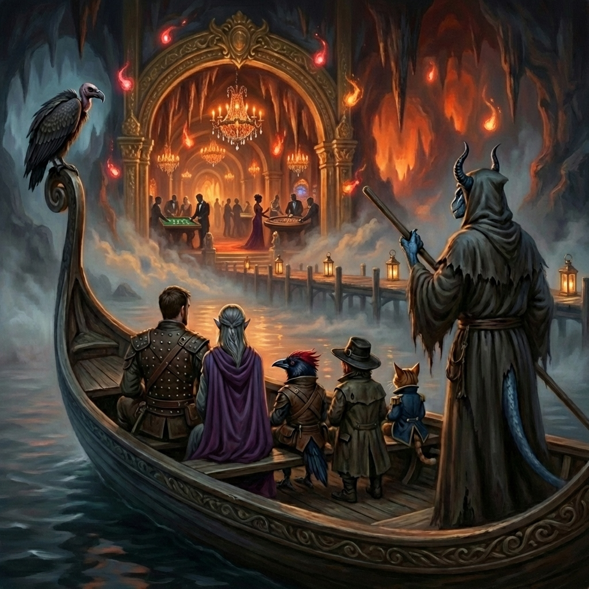
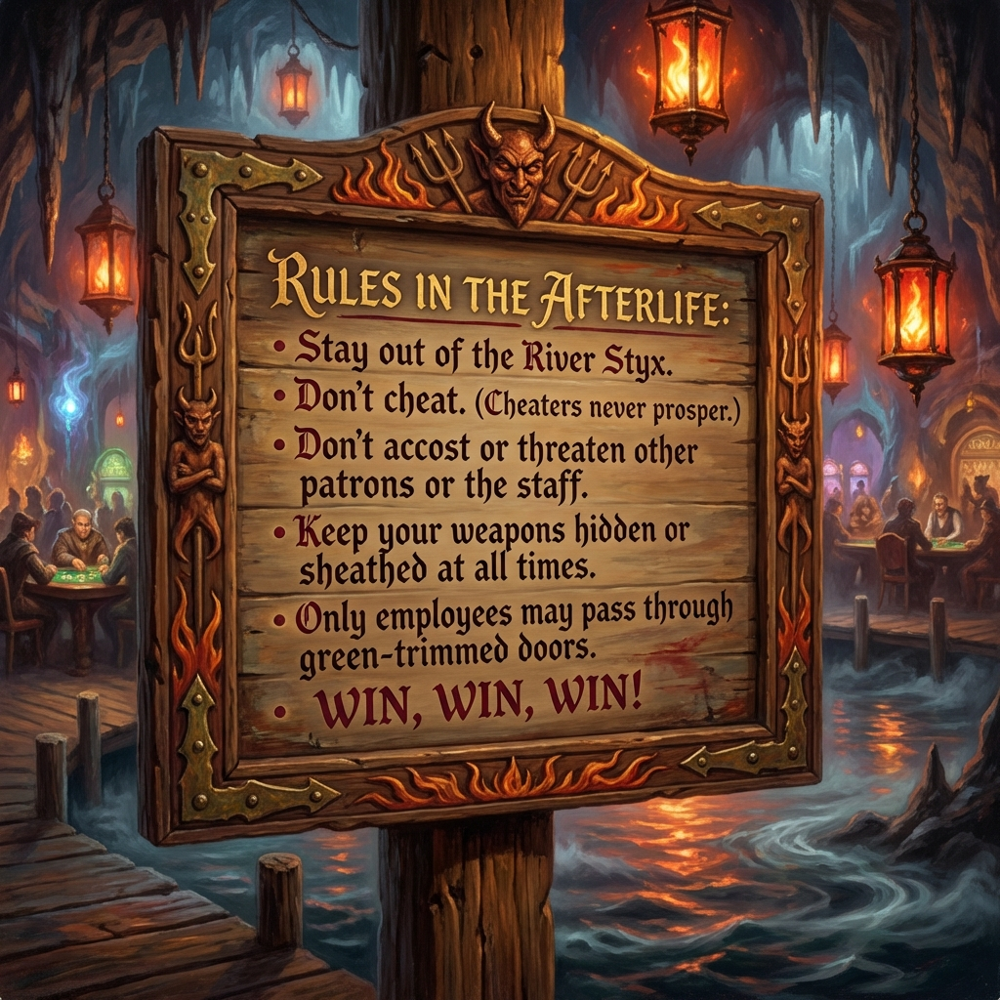
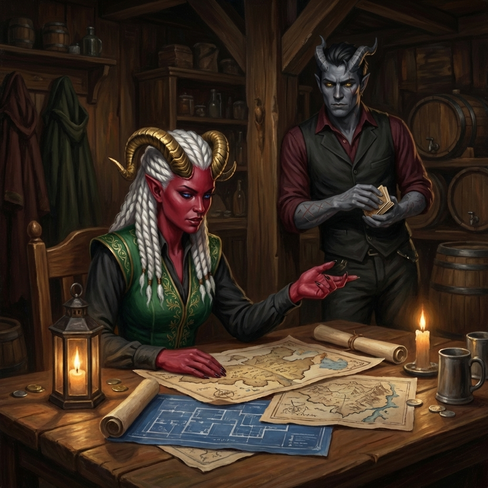
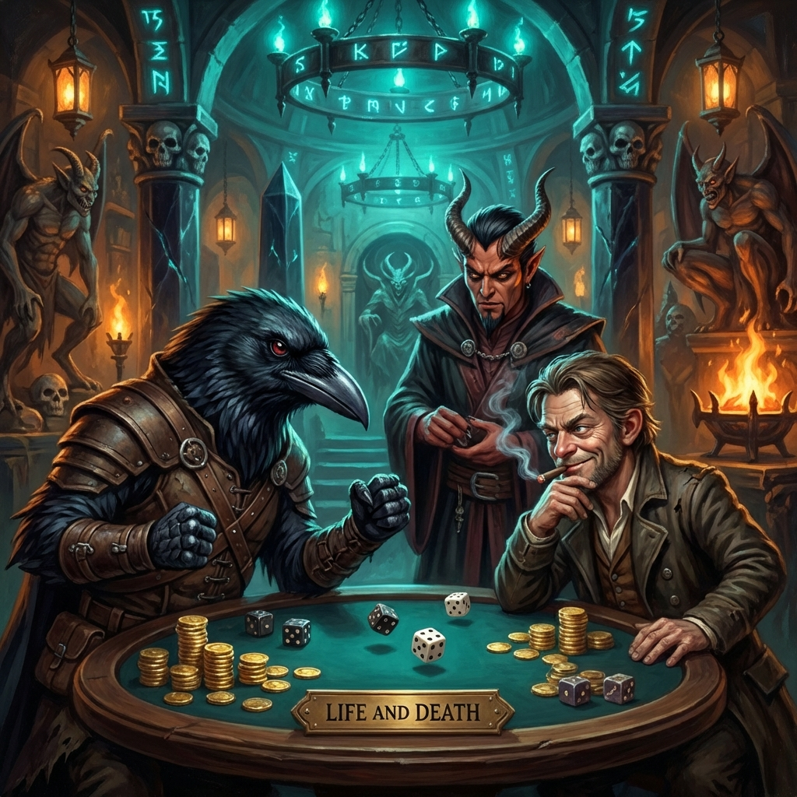
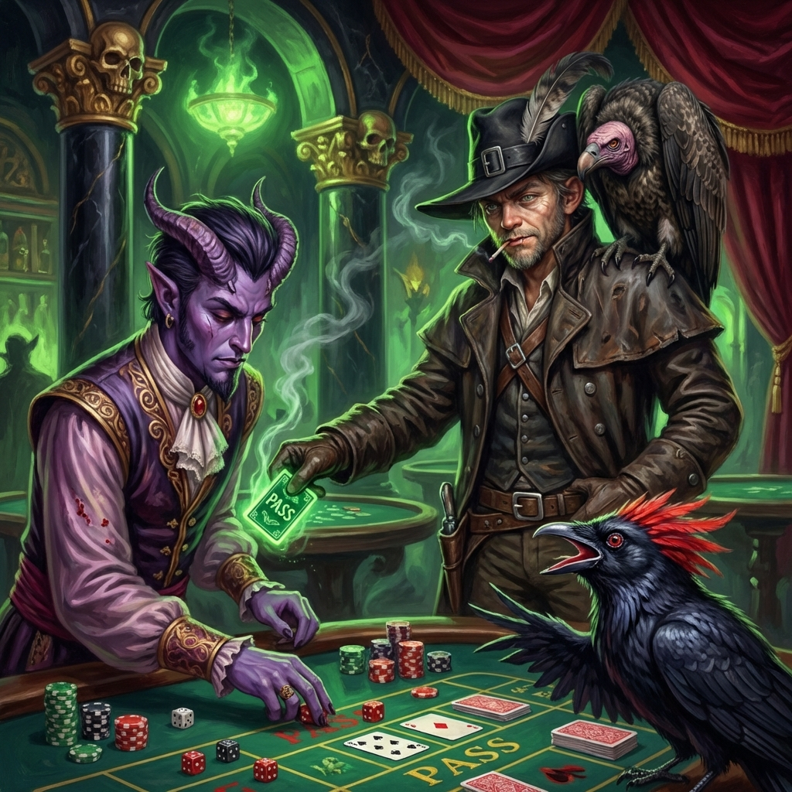
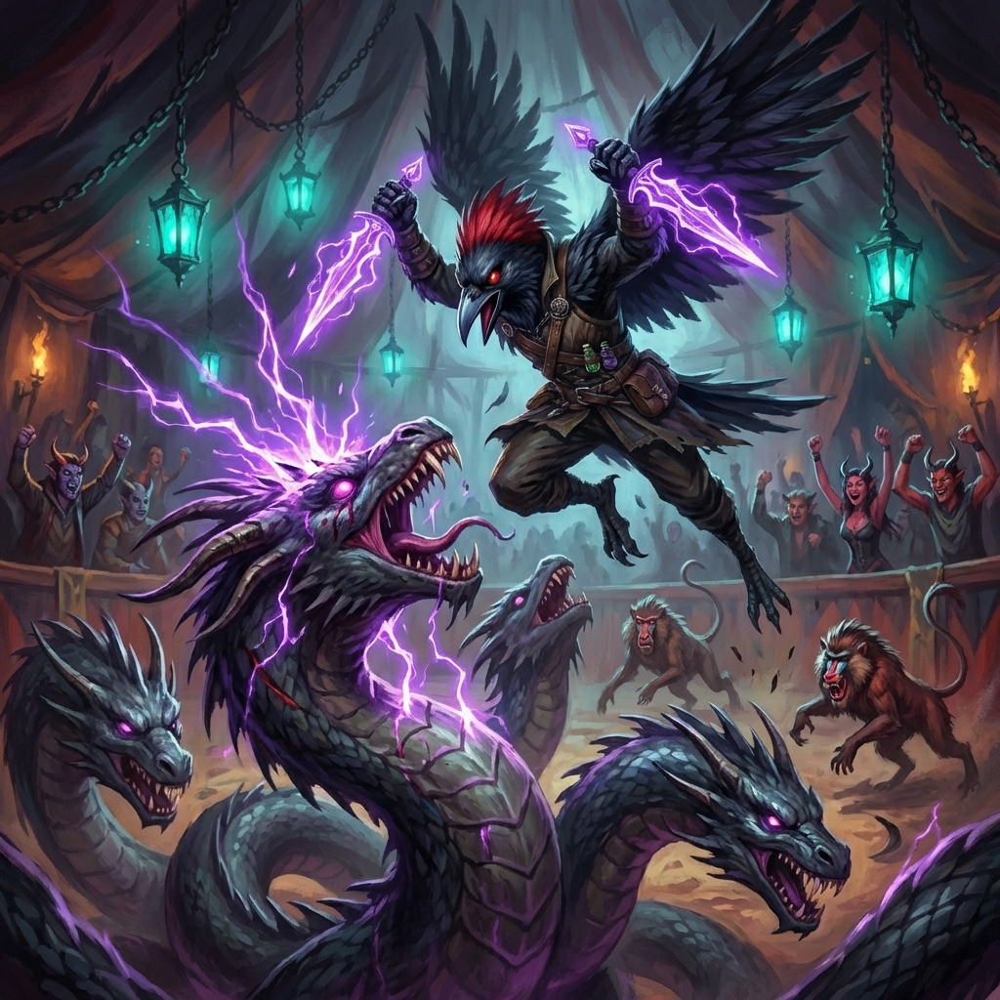

Session 2: The Stygian Gambit
Date: January 16, 2026
Location: The Afterlife Casino
Adventure: The Stygian Gambit (Keys From The Golden Vault)
Act 1: The Briefing
 Disguises En Route
The party adopted disguises traveling to meet their contact:
- Blood Feather dyed his feathers black
- Slim Pickens removed his signature cowboy hat
- Captain Kiara put on a hood
Meeting Verity Kye
At the Brine Widow tavern, the party met Verity Kye—a bold tiefling entrepreneur with a score to settle.
"The Afterlife Casino is a new Nine Hells–themed attraction just outside town. The owner, Quentin Togglepocket, built it using prize money he stole from ME—and I'd like you to give him HELL."
Objectives:
- Steal the erinyes statuette (tournament prize)
- Recover 5,000 gold pieces Quentin stole from Verity
- Embarrass Quentin in front of the tournament's high-profile guests
Introducing Maltus Draught
Verity introduced a new team member:
"This is Maltus Draught. He goes by Mal. He used to work at the Afterlife—knows the layout, the staff rotations, the back hallways most guests never see. More importantly, he knows how Quentin thinks."
Maltus's Role: Inside man, assigned by the Golden Vault. Carries a defaced deck of Three-Dragon Ante cards as his holy symbol.
Warning for Slim
Verity specifically warned Slim about his recognizable appearance:
"The whole city is talking about the museum fire. That wide-brimmed hat of yours? It might as well be a WANTED poster. Lose the hat. Change the look. Or don't go in at all."
Resolution: Slim's hat was stored in the bag of holding. Maltus took possession of the bag.
Act 2: The Casino Floor
Life and Death Game
Slim Pickens and Blood Feather tried their luck at the casino's signature dice game.
- Round 1: 10 gp each—House wins
- Round 2: 20 gp each—Both lose (-30 gp total)
- Round 3: Blood Feather won with a 5
- Round 4: Pushed his luck and won 60 gp → 90 gp total
Blood Feather tipped the dealer 1 gp.
The Key Card Heist
The party executed a coordinated theft to acquire a staff pass card:
- Maltus: Blessed Blood Feather with advantage
- Slim: Created a distraction at the table
- Kiara: Served as lookout
Result: ✅ Key card acquired + 15 gp taken
Tournament Chip Theft
Blood Feather waited 7 minutes for the right moment, then stole a significant stack of chips from the tournament leader.
Complication: The chips are tournament-only—cannot be cashed directly.
Act 3: The Circus Catastrophe
The Fight
The party got caught up in the casino's circus attraction and fought:
- 1 Hydra
- 3 Bamboons (demonic baboons)
Highlights:
- Slim got beat up badly
- Blood Feather finished the hydra with his psychic blades
The Crowd's Reaction
"Did you SEE that?! The kenku took down a hell HYDRA!"
Gold coins changed hands as bets were settled. This wasn't a disaster—it was the best show the Afterlife's had in months.
Act 4: Quentin Togglepocket

The Entrance
Quentin descended from his private balcony, slow-clapping:
"Magnificent. Truly, magnificent."
The Acknowledgment
"Do you have any idea how much those animals cost me? The hell hounds alone are imported from Avernus."
"And do you know what I'm thinking right now? Worth every copper."
Recognizing Maltus
Quentin spotted his former enforcer:
"Well, well. Maltus Draught. I was wondering when you'd crawl back. Though I admit, I expected you'd come begging for your old job—not... this."
Act 5: Return to the Tables

Second Gambling Session
After the circus incident, the party returned to gambling:
- Slim bet 30 gp—Lost
- Blood Feather bet 50 gp—Lost
- Both tied at 20—Blood Feather went to war
- Blood Feather bet 100 gp—Lost...
The Cheat: Slim used Prestidigitation to alter the die roll, turning the loss into a win.
Final Winnings: 400 gp total via Push Your Luck!
Session Totals
| Gold Won (Gambling) | ~400 gp |
| Net Gambling Profit | ~320 gp |
| Items Acquired | 1 employee key card |
| Tournament Chips Stolen | Significant (tournament-only) |
Open Threads
- Quentin recognized Maltus—what's his next move?
- Tournament chips need to be sold or used
- Key card opens staff-only areas
- Erinyes statuette & vault gold still need to be stolen